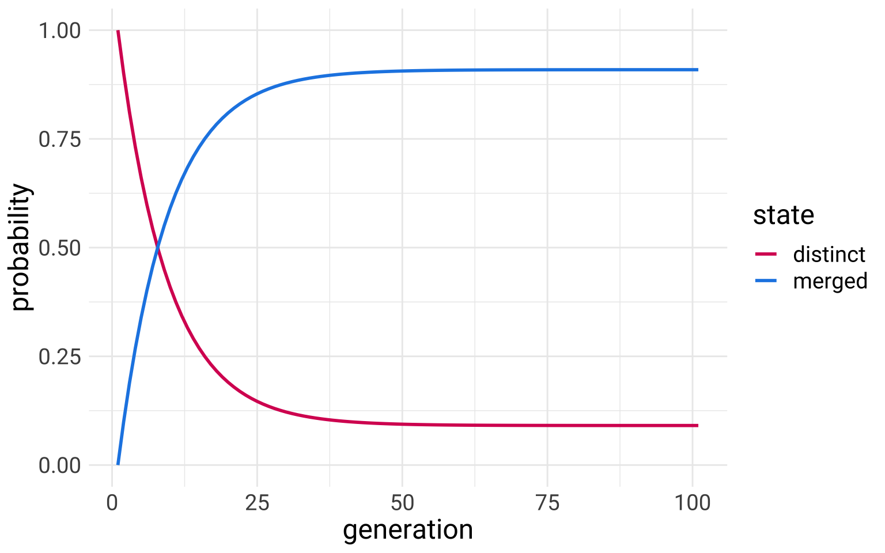

What is NLP?
(for this course)
NLP \(\in\) Computational Linguistics
“Computational Linguistics” covers a very broad range of topics. Natural Language Processing is currently an area of research and application that receives a lot of attention & money, but Computational Linguistics is a much broader umbrella term. The Association for Computational Linguistics defines it as
Computational linguistics is the scientific study of language from a computational perspective. Computational linguists are interested in providing computational models of various kinds of linguistic phenomena. These models may be “knowledge-based” (“hand-crafted”) or “data-driven” (“statistical” or “empirical”). Work in computational linguistics is in some cases motivated from a scientific perspective in that one is trying to provide a computational explanation for a particular linguistic or psycholinguistic phenomenon; and in other cases the motivation may be more purely technological in that one wants to provide a working component of a speech or natural language system. Indeed, the work of computational linguists is incorporated into many working systems today, including speech recognition systems, text-to-speech synthesizers, automated voice response systems, web search engines, text editors, language instruction materials, to name just a few.
Some examples of \(\{x | x \in \text{CL}~\text{and}~x \ne \text{NLP}\}\)
Formalizing Theory
One use of computational linguistics is to formalize linguistic theories into a computational framework. This might seem weird, since a lot of linguistic theory already looks very formal. But giving mathy looking definitions in a verbal description of a theory is a very different thing from implementing that theory in code that will run.
Some examples are
- Minimalist Parsers (Berwick and Stabler 2019) implementing parsers for Minimalist Syntax
- The Gradual Learning Algorithm (Boersma and Hayes 2001) implementing constraint re-ranking in Optimality Theory
- The Tolerance Principle (Charles. Yang 2016), formalizing how learners might acquire rules that have exceptions.
The interesting thing with formalizing verbal theories, computationally, is that things that might seem like big differences in the verbal theories could turn out to be computationally identical, and some things that might not seem like a big difference can turn out to be massively different computationally.
Conceptual Experiments
You can use general computational principles to flesh out what you would expect to happen given under specific theories, or to use specific computational implementations of linguistic theory to explore their consequences.
Here’s a little example from dialectology. We have two proposed principles:
Garde’s Principle: Mergers are irreversible by linguistic means
- once a community gets merger, like the cot/caught merger, it cannot get back the distinction
Herzog’s Corollary: Mergers expand at the expense of distinctions.
- once a community develops a merger, like the cot/caught merger, it will inevitably spread geographically to other communities
We can translate these two principles into a “finite state automaton” below.
A verbal translation of this diagram would be
We start out in a state of distinguishing between /ɔ/ and /ɑ/. With each step in time (“generation”), we probably keep distinguishing between /ɔ/ and /ɑ/ with a 0.9 probability, but there’s some chance we become a merged community. Once we become a merged community, we are overwhelmingly likely to remain a merged community with a 0.99 probability. But there is a very little probability that we might go back to being merged at 0.01 probability.
Under these circumstances, are we inevitably going to become a merged community? How long until we reach the maximum probability of becoming a merged community? We can answer these questions with a conceptual experiment, converting the description and diagram above into a transition probability matrix, and then just doing a bunch of matrix multiplications.
# python
import numpy as np
d_change = np.array([0.90, 0.10])
m_change = np.array([0.01, 0.99])
change_mat = np.row_stack((d_change, m_change))
print(change_mat)[[0.9 0.1 ]
[0.01 0.99]]# python
initial_state = np.array((1,0))
n_generations = 100
collector = [initial_state]
current_state = initial_state
for i in range(n_generations):
new_state = current_state @ change_mat
collector.append(new_state)
current_state = new_state
results_mat = np.row_stack(collector)
Looks like with the probabilities set up this way, we’re not guaranteed to become a merged community. The probability is very high (about 0.91), but not for certain. We might say, seeing this, that unless the Garde’s Principle is absolute (it’s impossible to undo a merger by any means) then Herzog’s Corollary won’t necessarily hold.
Other examples of conceptual experiments are
C. D. Yang (2000) used a model of variable grammar learning to see if he could predict which grammars (e.g. V2 vs no-V2) would win over time.
Sneller, Fruehwald, and Yang (2019) used the tolerance principle to see if a specific phonological change in Philadelphia could plausibly develop on its own, or if it had to be due to dialect contact.
Linzen and Baroni (2021) used RNNs (a kind of neural network) to see if “garden path” sentences (e.g. “The horse raced past the barn fell.”1) were difficult just because the word at the pivot point was especially unlikely.
Agent Based Modelling
This doesn’t always fall under the rubric of “computational linguistics,” but agent-based modelling involves programming virtual “agents” that then “interact” with each other. Part of what you program into the simulation is rules for how agents interact with each other, and what information they exchange or adopt when they do. It’s often used to model the effect of social network structure.
Building and using computational tools and data
Of course, there is a massive amount of effort that goes into constructing linguistic corpora, and developing computational tools to analyze those corpora.
NLP
For this class, we’ll be mostly focusing on the “Language Modeling” component of NLP, and we’ll be following the definition of “Language Model” from Bender and Koller (2020) as a model trained to predict what string or word is most likely in the context of other words. For example, from the following sentence, can you guess the missing word?
- I could tell he was mad from the tone of his [____]
Using the predictions
Language model predictions are really useful for many applications. For example, let’s say you built an autocaptioning system that took audio and processed it into a transcription. You might have a situation where the following sentence gets transcribed.
- Poker and blackjack are both games people play at casinos.
The digital signal, , in this sentence is consistent with two possible words here
- car
- card
Us humans here know that in the context of “poker”, “blackjack”, “games” and “casinos”, the more likely word is “card”, not “car.” But a simple model that’s just processing acoustics doesn’t know that. So to improve your captioning, you’d probably want to incorporate a language model that takes the context into account and boosts the probability of “card”.
This is just one example, but there are many other kinds of string prediction tasks, such as:
Given a string in language A, predict the string in language B (a.k.a. machine translation).
Given a whole paragraph, predict a summary of the paragraph (summarization).
Given a question, predict an answer (question answering).
Given a prompt, continue the text in the same style (text generation).
Using the representations
In the process of training models to do text generation, they develop internal representations of strings of text that can be useful for other purposes. For example, a common NLP task is “sentiment analysis,” that could be used to analyze, say, reviews of products online.2
One really very simplistic approach would be to get a dictionary of words that have been scored for their “positivity” and “negativity.” Then, every one of those words or a tweet or what ever has one of those words in it, you add its score as a total sentiment score.
# R
library(tidytext)
set.seed(101)
get_sentiments("afinn") %>%
sample_n(10) %>%
kable()| word | value |
|---|---|
| lobby | -2 |
| stricken | -2 |
| loser | -3 |
| jealous | -2 |
| breakthrough | 3 |
| inability | -2 |
| harshest | -2 |
| ranter | -3 |
| cried | -2 |
| warfare | -2 |
Here’s an example with a notable tweet.
# R
tweet <- "IF THE ZOO BANS ME FOR HOLLERING AT THE ANIMALS I WILL FACE GOD AND WALK BACKWARDS INTO HELL"
tweet_df <- tibble(word = tweet %>%
tolower() %>%
str_split(" ") %>%
simplify()) %>%
left_join(get_sentiments("afinn")) %>%
replace_na(replace = list(value = 0))# R
tweet_df# A tibble: 19 × 2
word value
<chr> <dbl>
1 if 0
2 the 0
3 zoo 0
4 bans 0
5 me 0
6 for 0
7 hollering 0
8 at 0
9 the 0
10 animals 0
11 i 0
12 will 0
13 face 0
14 god 1
15 and 0
16 walk 0
17 backwards 0
18 into 0
19 hell -4# R
tweet_df %>%
summarise(sentiment = sum(value))# A tibble: 1 × 1
sentiment
<dbl>
1 -3However, this is a kind of lackluster approach to sentiment analysis nowadays. Many language models now now, as a by product of their string prediction training, have more complex representations of words than just a score between -5 and 5, and have representations of whole strings that can be used (so it won’t give the same score to “good” and “not good”).
# python
from transformers import pipeline
# warning, this will download approx
# 1.3G of data.
sentiment_analysis = pipeline("sentiment-analysis",
model="siebert/sentiment-roberta-large-english")# python
print(sentiment_analysis("IF THE ZOO BANS ME FOR HOLLERING AT THE ANIMALS I WILL FACE GOD AND WALK BACKWARDS INTO HELL"))
print(sentiment_analysis("This ain't bad!"))[{'label': 'NEGATIVE', 'score': 0.9990140199661255}]
[{'label': 'POSITIVE', 'score': 0.9944340586662292}]